The slide of the lecture is on the left, the same figure or table on the right, computed in the browser from the same data. The ▶ button moves the parameter step by step; the tables and worked examples are recomputed with it. Abbreviations: PD (probability of default), LGD (loss given default), EAD (exposure at default), EL (expected loss), IRB (internal ratings-based approach), RWA (risk-weighted assets), WoE (weight of evidence), IV (information value), LDA (linear discriminant analysis), ROC (receiver operating characteristic), AUC (area under the ROC curve), CAP (cumulative accuracy profile), AR (accuracy ratio), KS (Kolmogorov–Smirnov statistic), HL (Hosmer–Lemeshow test), TP, FN, FP, TN (true positive, false negative, false positive, true negative), TPR (true positive rate), FPR (false positive rate), PDO (points to double the odds), LR (likelihood ratio), CI (confidence interval), se (standard error), DM (Deutsche Mark), EBIT (earnings before interest and taxes), TA (total assets), DD (distance to default), GBM (geometric Brownian motion).
What a Credit Score Is · Default Data · Weight of Evidence and Information Value · Logistic Regression · Linear Discriminant Analysis · From Model to Scorecard · Validation · Reject Inference and Fairness · Corporate Default: Altman and Merton
What a Credit Score Is
PD in Good and Bad Years: the One-Factor Model
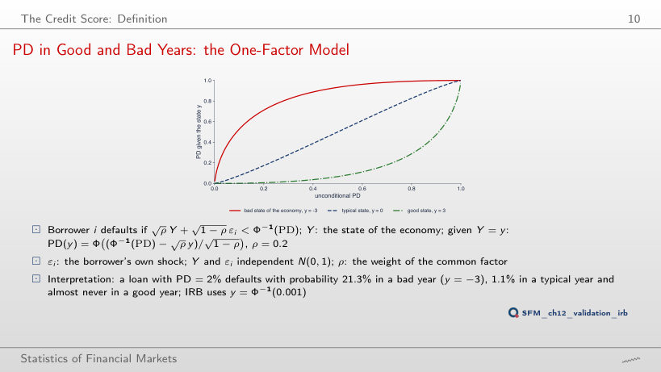
Answer
It rises from 21.3% to 53.8%; in a typical year (y = 0) it falls from 1.08% to 0.18%. A larger weight of the common factor concentrates the defaults in the bad years, while the average over all years stays at 2%.
Worked Example: IRB Capital of a Retail Loan
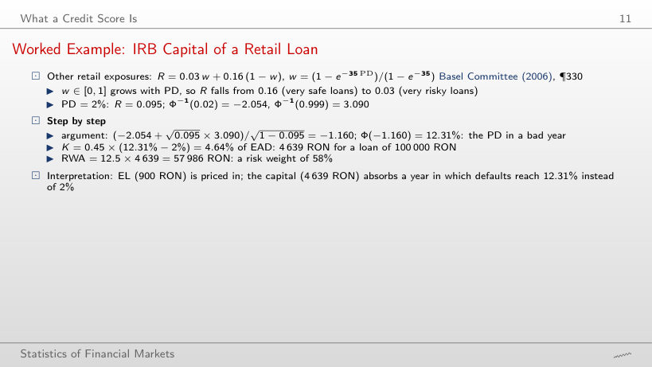
Worked example: IRB capital, other retail exposures
Answer
No: it rises from 4.64% to 5.20% of EAD (+12%), while EL doubles from 0.90% to 1.80%. The correlation R falls from 0.095 to 0.062 as PD rises, and the extra defaults are increasingly expected rather than unexpected.
Expected Loss and IRB Capital as Functions of PD
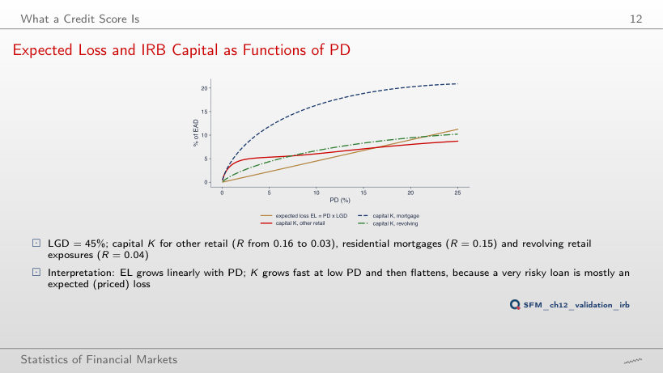
Answer
It rises only from 5.31% to 6.04% of EAD (+14%). K covers the unexpected loss: the higher the PD, the larger the share of the loss that is expected and priced in, and R falls from 0.053 to 0.034. Above a PD of about 16%, K is even smaller than EL.
Default Data
Bad Rate by Checking Account
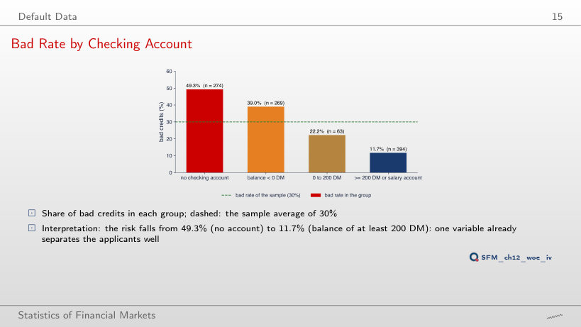
Answer
49.3% (274 credits), the riskiest group, against 11.7% for a balance of at least 200 DM or a salary account: a ratio of 4.2. The figures were right in both versions; only the labels were swapped.
Weight of Evidence and Information Value
Worked Example: WoE and IV of the Checking Account
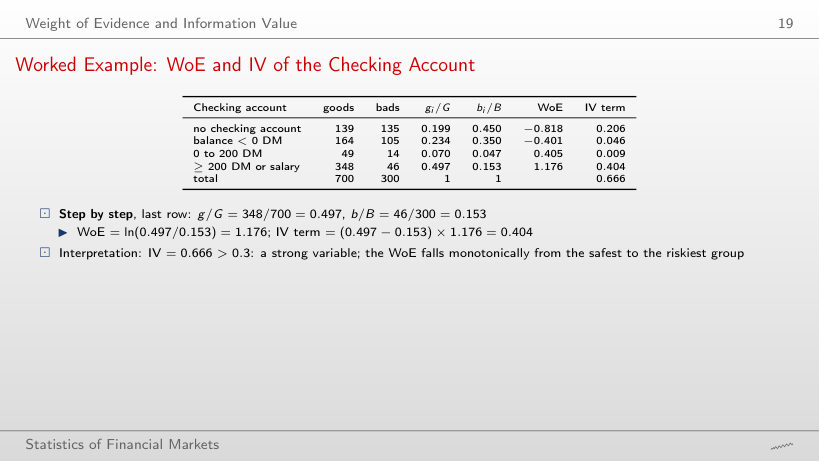
WoE table on the full sample
Worked example: WoE and IV term of one row
Answer
ln(0.497/0.153) = 1.176: the share of goods is 3.2 times the share of bads. Its IV term, (0.497 − 0.153) × 1.176 = 0.404, is the largest of the four; the total IV is 0.666, a strong variable.
WoE of the Credit Duration
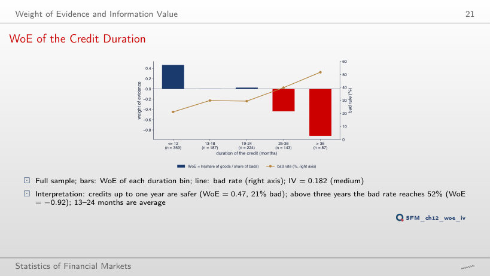
Answer
No: it is 30.9% for the smallest loans, falls to 23.9% at 2001–3000 DM and rises to 41.5% above 5000 DM (WoE from 0.31 to −0.50). The relation is U-shaped, which a single linear term in a logit misses and the bins capture; IV = 0.082, a weak variable.
Information Value of the 20 Variables
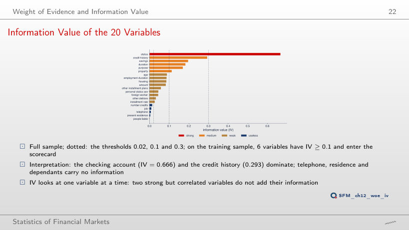
Answer
No: on the training sample its IV is 0.082, and employment duration (0.086 on the full sample, 0.122 on the training sample) takes its place. Six variables pass in both cases. IV computed on a few hundred credits moves by several hundredths between samples: on the 300 test credits the IV of the checking account is 0.913, against 0.666 on all 1,000.
Logistic Regression
Odds and Log-Odds
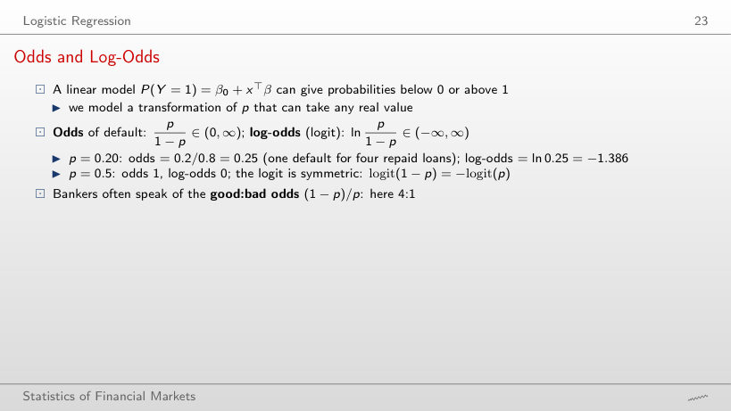
Worked example: odds and log-odds
Answer
+1.386: logit(1 − p) = −logit(p), the logit is symmetric around p = 0.5. The odds are 4 (four defaults per repaid credit), the inverse of 0.25.
A Logistic Curve: PD and Duration
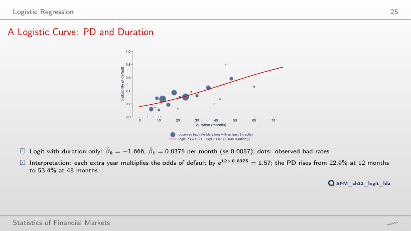
Answer
By e^(10 × (−0.0185)) = 0.83, that is −17%: PD falls from 34.0% at age 25 to 21.3% at age 60. Duration alone gives 1.57 per year: older applicants are safer, longer credits riskier.
A Small Logit on the Full Sample
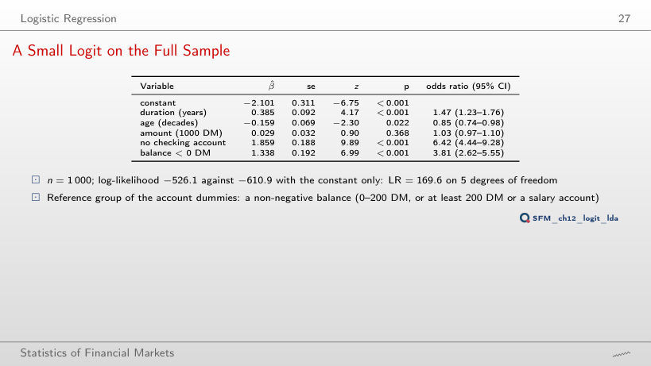
Coefficients, full sample (1,000 credits)
Answer
It rises to 0.112 per 1000 DM, p < 0.001: without duration, the amount picks up the risk of long credits, with which it is correlated. A coefficient is the effect with the other variables held fixed; leaving out a correlated variable changes it.
Odds Ratios with Confidence Intervals
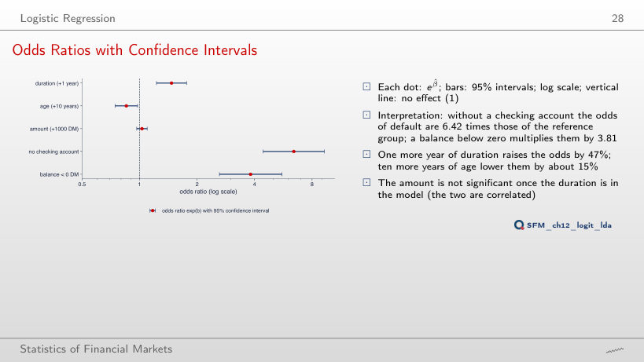
Answer
Yes: 0.71–1.02. The age effect has p = 0.022: significant at 5%, not at 1%. The intervals of duration and of both account indicators exclude 1 also at 99%; the amount contains 1 at every level.
Worked Example: the PD of an Applicant
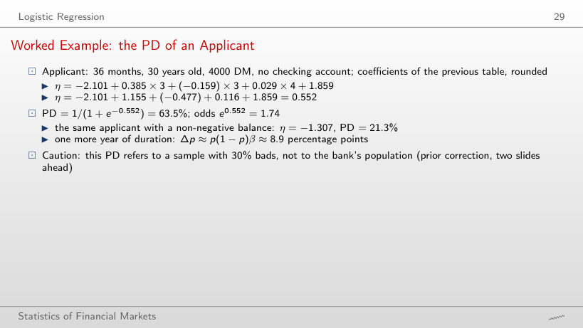
Worked example: PD of an applicant (rounded coefficients)
Answer
71.8%: η rises by 0.385 to 0.937. The approximation p(1 − p)β = 8.9 points from 63.5% gives 72.4%, close, but the exact change, 8.3 points, is smaller because the logistic curve flattens as p moves away from 0.5.
The WoE Logit Scorecard
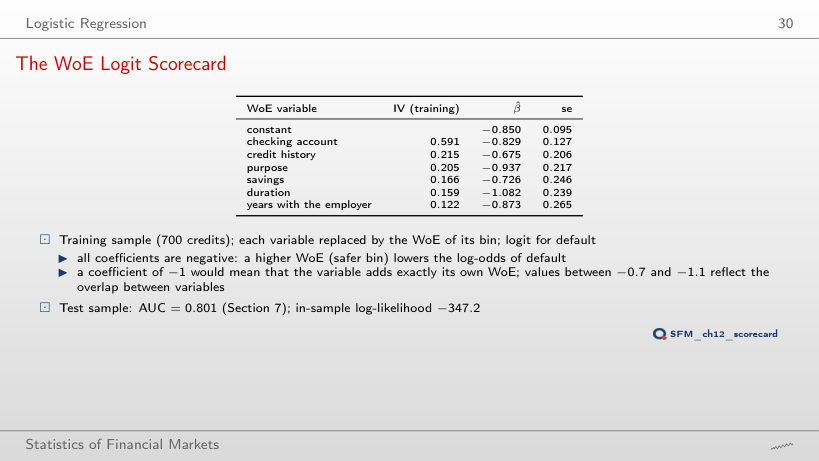
The WoE logit scorecard (training sample, 700 credits)
Answer
No: it falls from 0.801 to 0.787, while the training AUC rises from 0.789 to 0.825. The nine weak variables fit the noise of the 700 training credits.
Correcting for Oversampling
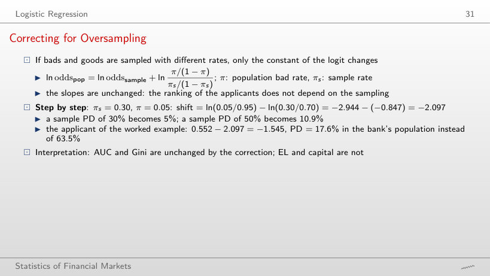
Worked example: the prior correction
Answer
3.9%: the correction is ln(0.01/0.99) − ln(0.3/0.7) = −3.748, so η = 0.552 − 3.748 = −3.196. Only the constant moves; the ranking of the applicants, and with it the AUC, stays the same.
Linear Discriminant Analysis
Worked Example: Fisher's Direction with Two Variables
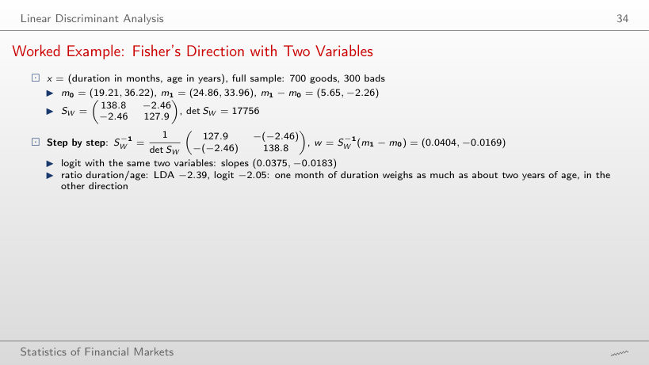
Worked example: Fisher’s direction
Answer
0.640, exactly as much as the logit with the same two variables. The scorecard with six WoE variables reaches 0.801 on the test sample: two variables are far from enough, as the overlapping clouds also show.
Fisher's Boundary and the Logit Boundary
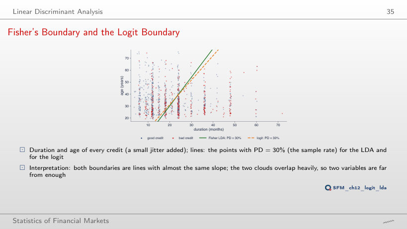
Answer
They move in parallel to longer durations: at age 30 from about 20 months (19.9 LDA, 19.4 logit) to about 41 months (40.9 and 42.0). The slope does not depend on the PD level; only the constant changes.
Logit or LDA?
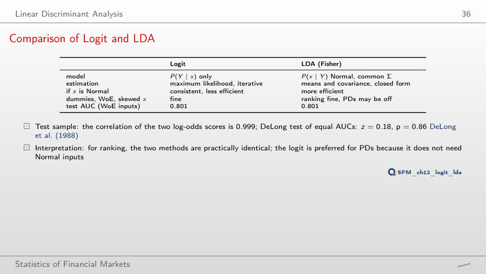
Logit and LDA on the same six WoE variables
Answer
No, slightly lower: 0.789 against 0.790, DeLong z = −0.48, p = 0.63. On the test sample the logit is slightly ahead (0.8013 against 0.8009, z = 0.18). The two scores correlate 0.999; neither ranking is separated from noise by this test.
From Model to Scorecard
Worked Example: Scores and Points
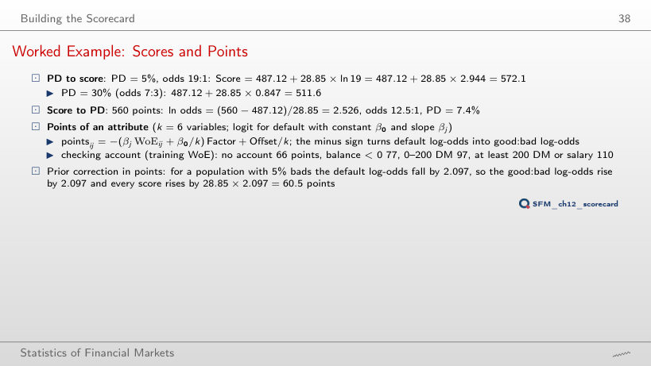
Worked example: scores and points
Answer
544.2: Factor 57.71, Offset 374.25. The base point stays at 600 for odds of 50:1; a PD of 5% means odds of 19:1, below the base, and with a steeper scale the score falls further below 600.
Scores of the Test Sample
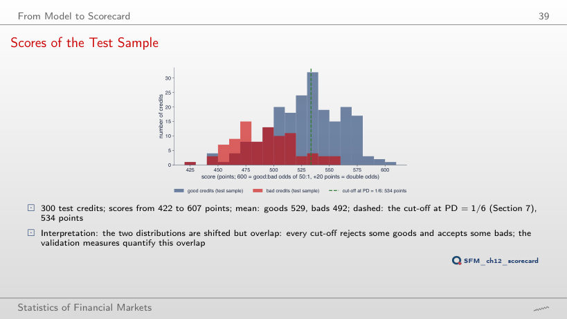
Answer
8 (FN): 82 of the 90 bads are rejected. The price: 112 of the 210 goods are rejected. The two distributions overlap, so every cut-off trades one error for the other.
Validation
Two Cut-Offs on the Test Sample
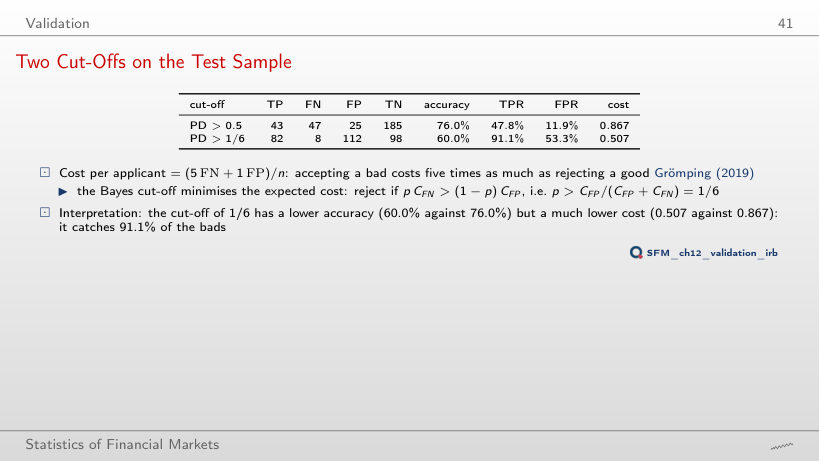
Confusion matrices on the test sample (last row: the chosen cut-off)
Worked example: the rates at the chosen cut-off
Answer
Accuracy falls from 76.0% to 72.7%, the cost falls from 0.867 to 0.527: TPR rises from 47.8% to 78.9%, FPR from 11.9% to 30.0%. Accuracy weighs both errors equally; the cost weighs an accepted bad five times.
Expected Cost and the Choice of the Cut-Off
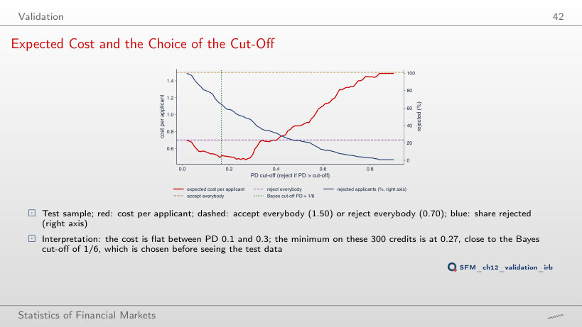
Answer
81%: the cut-off falls from 1/6 to 1/11 = 0.091 and the share rejected rises from 64.7% to 81.0%; the expected cost is 0.620, below the 0.700 of rejecting everybody.
ROC Curve and AUC
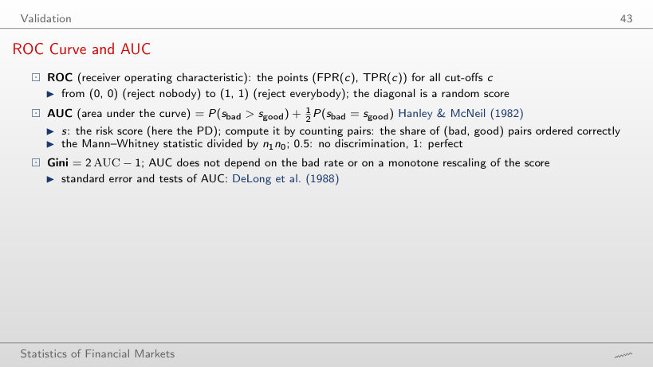
Worked example: AUC as a rank probability
Answer
23.1% (4,362 pairs); each counts 1/2, so AUC = (11,579 + 2,181)/18,900 = 0.728. The WoE logit has only 12 tied pairs (0.06%).
ROC Curves on the Test Sample
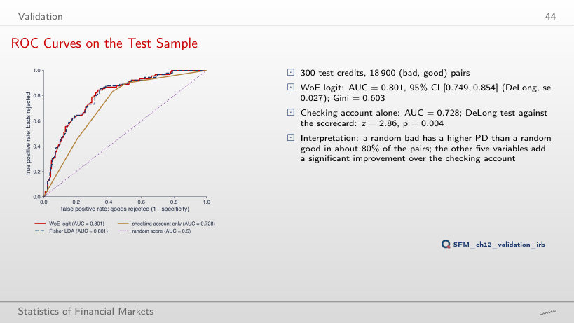
Answer
Below: 0.789. In-sample performance is usually optimistic, but this split was lucky: over the 100 folds of the cross-validation the mean test AUC is 0.764.
CAP Curve, Accuracy Ratio and KS
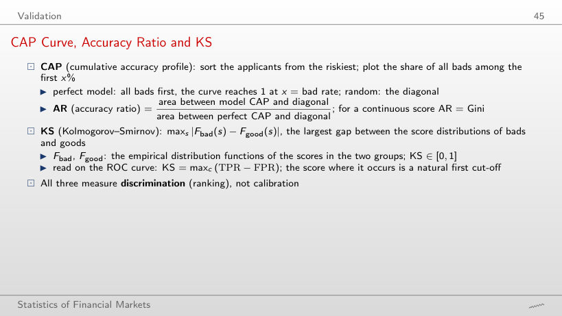
Worked example: KS, Gini and AR
Answer
No: AR = 0.240. With only four score values, the CAP orders applicants with the same score in file order, which is arbitrary; AR = Gini holds for a continuous score (WoE logit: 0.602 and 0.603). KS is 0.410, against 0.511.
CAP and KS on the Test Sample

Answer
60% (54 of 90). The perfect model would catch all of them, since 30% is exactly the bad rate; a random score would catch 30%.
CAP and KS on the Test Sample
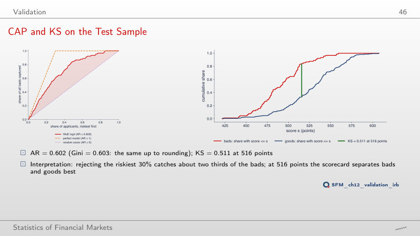
Answer
0.373: 91.1% of the bads and 53.8% of the goods score at most 534. This is TPR − FPR at this cut-off; KS is its maximum over all cut-offs. The cut-off that minimises the expected cost is not the one that maximises KS, because KS weighs both errors equally.
Calibration and the Brier Score
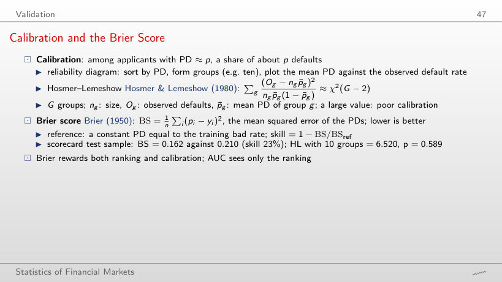
Worked example: the Brier score and the Hosmer–Lemeshow test
Calibration table of the scorecard (test sample)
Answer
0.90 (HL = 0.589, 3 degrees of freedom); 0.59 with 10 groups, 0.82 with 20. Not rejected in any grouping: with 300 credits the test has little power, so “not rejected” does not prove that the PDs are exact.
Calibration on the Taiwan Data
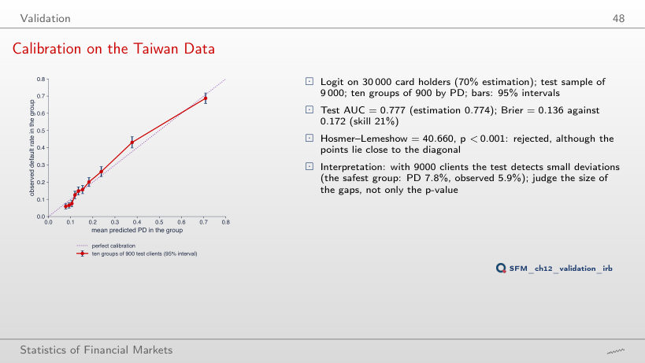
Calibration table (in red: HL term above 3.84)
Answer
Yes: HL = 22.6 with 3 degrees of freedom, p < 0.001 (with 20 groups, 67.5, p < 0.001). With 9,000 clients the test detects deviations of one or two percentage points; what matters is the size of the deviations, not only the p-value.
Training and Test AUC in Repeated Cross-Validation
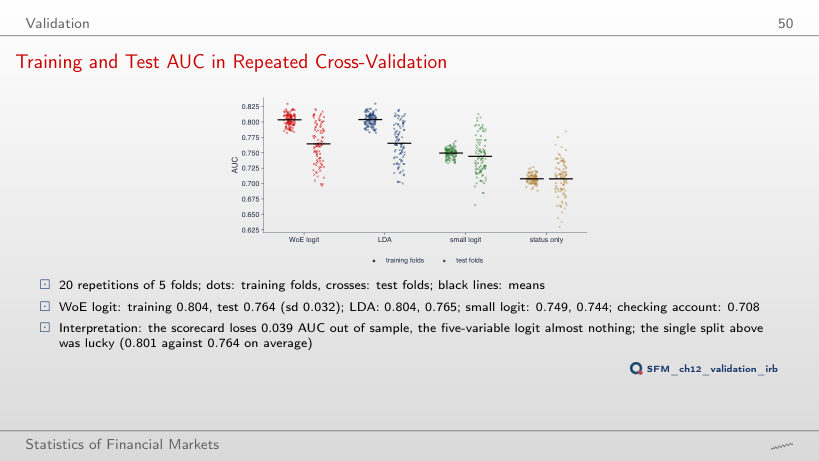
Answer
Very little: 0.766, 0.767, 0.766, 0.764. A single 5-fold run already averages five test folds; the single split of the lecture (0.801) is one draw from a distribution with standard deviation 0.032.
Reject Inference and Fairness
A Reject-Inference Experiment on the Taiwan Data
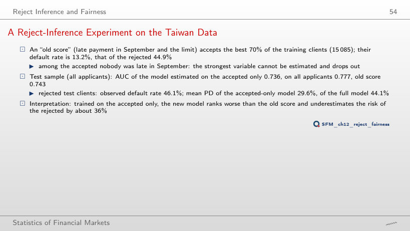
The reject-inference experiment (test sample, 9,000 clients)
Answer
No, it now overestimates it: mean PD 80.0% against an observed 69.4%, and its AUC on all applicants (0.777) is that of the full model. At 90%, clients who paid late in September are among the accepted, so no variable drops out; the rejected 10% lie beyond the training data, and the logit extrapolates.
Approval and Default by Group: Taiwan
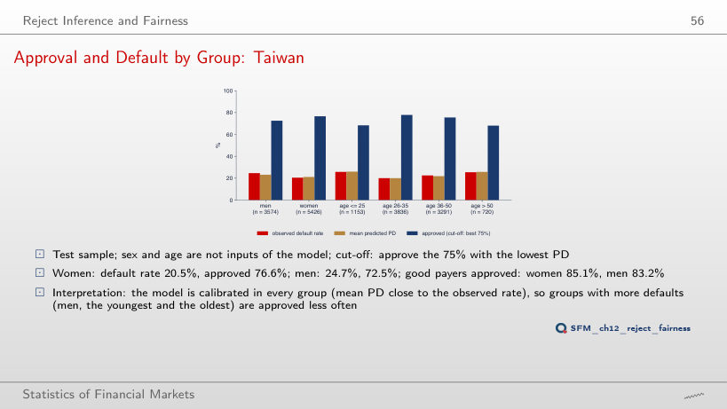
Answer
It shrinks from 4.1 to 2.2 percentage points (90.9% against 88.7%). The order of the groups stays the same, because the model is calibrated in each group and men default more often (24.7% against 20.5%).
Corporate Default: Altman and Merton
Worked Example: a Z-Score
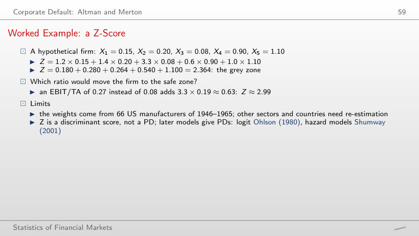
Worked example: the Z-score
Answer
Above 0.27 (exactly 0.2697): the other four terms give 2.100, and 3.3 X₃ has to add 0.890. EBIT/TA has the largest weight, 3.3, so profitability moves the Z-score most.
Worked Example: Distance to Default
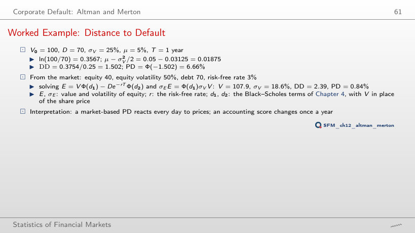
Worked example: distance to default
Answer
20.7%: DD falls to (0.3567 + 0.05 − 0.08)/0.40 = 0.817. Volatility enters twice: it lowers the drift term and divides the distance.
Merton: Asset Paths and PD
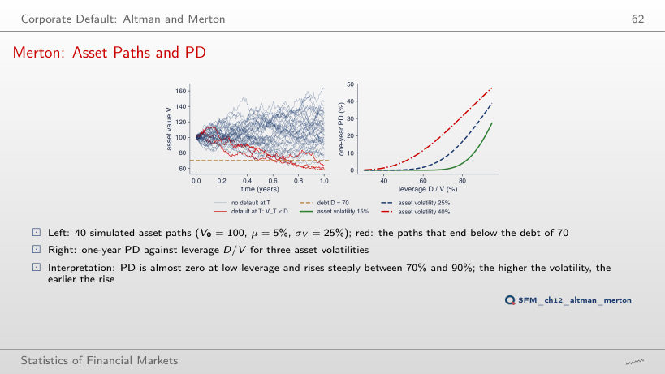
Answer
8 of 40, against 3 at 25% and none at 15%; the model PD at D/V = 70% is 20.7%, 6.66% and 0.42%. With 40 paths the counts are noisy: 8/40 = 20%.
South German Credit (Grömping, 2019; UCI, doi:10.24432/C5QG88): 1,000 consumer credits of 1973–1975, 300 bad; stratified 700/300 split (seed 2026). Taiwan credit card data (Yeh and Lien, 2009; UCI, doi:10.24432/C55S3H): 30,000 clients, test sample of 9,000. Both data sets are saved in data/credit. From the South German Credit records the browser computes the WoE tables, IV, the logit and LDA models, the scorecard, the confusion matrices, ROC, AUC, DeLong, Gini, CAP, KS, Brier and Hosmer–Lemeshow; from the PD, outcome, sex and age of the 9,000 Taiwan test clients, the calibration and the fairness figures. The AUC of the 100 cross-validation folds, the Merton paths (seed 2026) and the reject-inference experiment come from the code of the lecture. Other variables, samples, cut-offs, costs, confidence levels, approval and acceptance shares (50, 60, 80 and 90%) are extra runs of the same code.